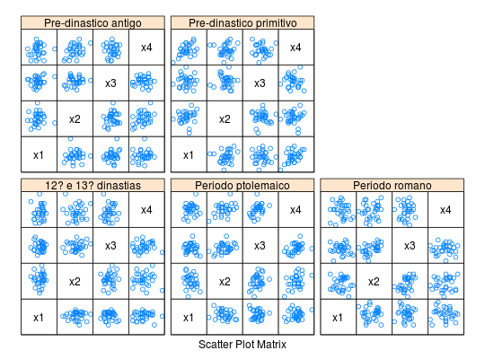
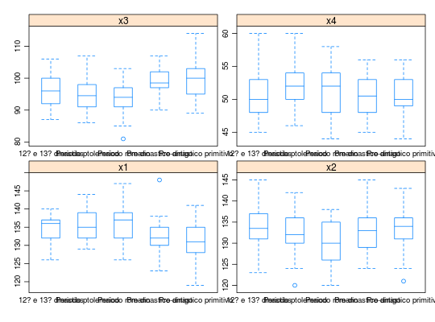

Medidas de crânios egípcios masculinos em cinco períodos de tempo. Medidas tomadas em milímetros.
Um data.frame com os tamanhos de 30 crânios para cada
período de tempo, com quatro variáveis.
grupx1x2x3x4A figura abaixo descreve as medidas do crânio.
MANLY (2005), pág. 16.
data(ManlyTb1.2)#> Warning: data set ‘ManlyTb1.2’ not foundstr(ManlyTb1.2)#> 'data.frame': 150 obs. of 5 variables: #> $ grup: chr "Pre-dinastico primitivo" "Pre-dinastico primitivo" "Pre-dinastico primitivo" "Pre-dinastico primitivo" ... #> $ x1 : int 131 125 131 119 136 138 139 125 131 134 ... #> $ x2 : int 138 131 132 132 143 137 130 136 134 134 ... #> $ x3 : int 89 92 99 96 100 89 108 93 102 99 ... #> $ x4 : int 49 48 50 44 54 56 48 48 51 51 ...library(lattice) library(reshape2) splom(~ManlyTb1.2[2:5] | grup, data = ManlyTb1.2, layout = c(3, 2), pscales = 0, varnames = c("x1", "x2","x3", "x4"))ManlyTb1.2long <- melt(ManlyTb1.2, id.vars = "grup") bwplot(value ~grup | variable, data = ManlyTb1.2long, scales = list(relation = "free"), ylab = "", pch = "|")